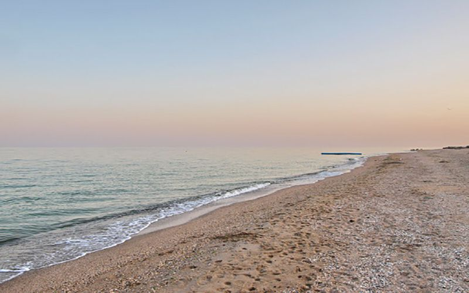
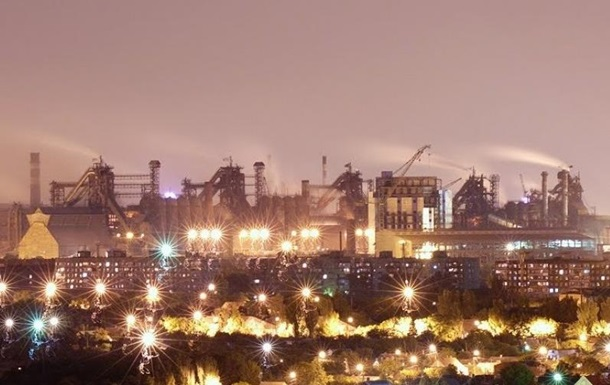

ABOUT:
Mariupol is a city in the Azov region of the Donetsk region of Ukraine, the largest city on the shores of the Azov Sea at the mouth of the Kalmius and Kalchik rivers. Center of the Mariupol agglomeration.


The Azov Sea is a semi-enclosed sea of the Atlantic Ocean in eastern Europe
Due to the stable operation of most large enterprises, the city is constantly faced with environmental problems.